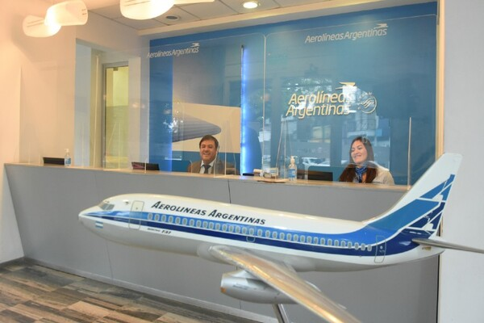

AEROLINEAS ARGENTINAS
La aerolínea mas elegida por los argentinos
Aerolíneas Argentinas es la línea aérea de bandera de la Argentina, dedicada al transporte comercial de pasajeros y carga. la aerolínea de bandera de la República Argentina. Es reconocida por ser una de las mejores y más seguras aerolíneas del mundo y elegida por Travelers' Choice Awards como la mejor aerolínea de america en cuanto a servicios a bordo y puntualidad de 90 por ciento
Nuestra ubicacion
Nuestra ubicacion fisica en la que realizamos atencion personalizada a traves de nuestra oficina comercial se ubica en la Ciudad Autonoma de Buenos Aires.
Nuestra flota
Aerolíneas, está llevando a cabo un ambicioso programa de renovación de la flota, la cual actualmente se compone por aeronaves de la familia Airbus A330, Boeing 737-700, Boeing 737-800, Boeing 737 MAX 8 y Embraer E190.
Desprogramó su flota de Airbus A340-200 reemplazándola por la flota Airbus A330-200, esta última más eficiente en gastos operativos y de combustible debido a su menor costo de mantenimiento.También retiró los Airbus A340-300 más antiguos, y los reemplazó por A330-200. En un momento, se dijo que se añadirían Boeing 777, Boeing 787 o Airbus A350, en reemplazo de los A340.Hasta el momento, Aerolíneas posee sus 8 A330 para vuelos de larga distancia.

Nuestra historia
La historia de Aerolineas es basta y compleja, pero ha resultado en una de las mejores y mejor calificadas lineas aereas de todo el mundo.

Nuestro contacto
Aerolineas Argentinas tiene dos medios principales de contacto. a traves de los medios digitales principalmente.